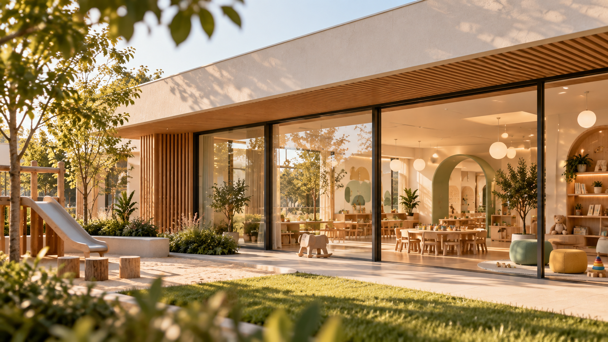
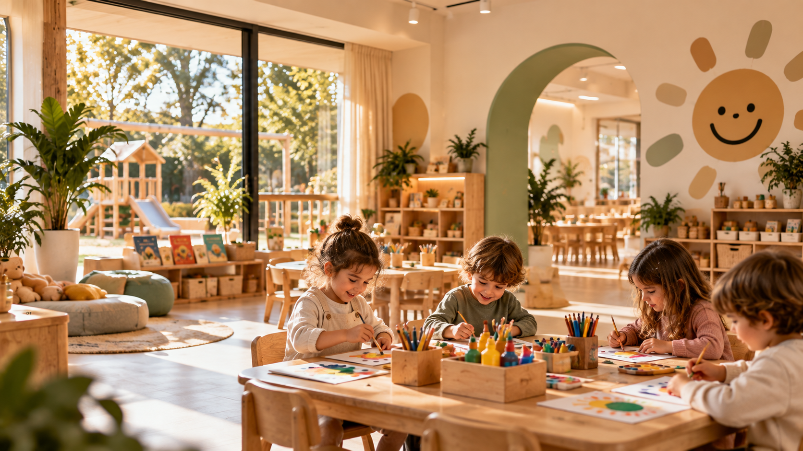

01
KREŞ · SOSYAL MEDYA · PRODÜKSİYON
ADK KIDS KÜTAHYA
PROJE HAKKINDA
ADK Kids için sıcak, güven veren ve çağdaş bir marka dünyası kurguladık. Çocukların keşfetme duygusunu merkeze alan görsel dili sosyal medya, fotoğraf ve prodüksiyon çalışmalarında tutarlı biçimde sürdürdük. Mekânın doğal ışığını, oyun alanlarını ve samimi atmosferini iletişimin parçasına dönüştürdük. İçeriklerde çocukların enerjisini öne çıkarırken ailelere güven veren sade ve modern bir anlatım kurduk. Renk, kadraj ve içerik yaklaşımını bütüncül ele alarak markanın her temas noktasında aynı sıcaklığı koruduk. Böylece dijital mecralarda kolay tanınan, güven veren ve sürdürülebilir bir görsel kimlik oluşturduk.




4 KARE / SEÇİLİ PROJEPROJEYİ GÖR